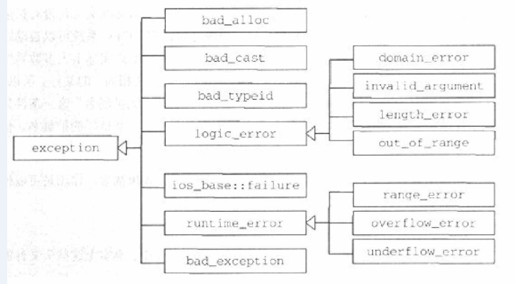

template
针对“一个或多个尚未明确的型别”所写的函数或类别
example
template<typename T>
inline const T& max(const T &a, const T & b)
{
return a>b?a:b;
}
template的参数可以是 型别 非型别 可带默认值
注意
template中的任何标识符(如果不以typename标识)都被认为是一个value
template <typename T>
class Test
{
typename T::data * ptr;
}
若无 typename T::data 或被认为是static成员而非 T中的一个型别
成员模板
class的成员函数为template
这通常被作为两个型别之间的自动转换
template<typename T>
class Test{
private:
T value;
public:
Test(T x)
{
value=x;
}
template<U>
void assion(const Test<U> &x)
{
value=x.getValue();
}
T getValue() const
{
return value;
}
};
在复制对象时实现隐式转换
template<typename T>
class Test{
public:
template<typename U>
Test(const Test<U>& x)
{...}
};
Test<int>a;
Test<double>b(a); //template constructor
Test<int>c(a); //copy construct 若想template con...需要覆盖copy con...
基本型别的显示初始化
以constructor调用语法 基本型别会被初始化为0
example
int a = int();
template<typename T>
void f()
{
T t=T();
}
exception
在遇到一个意外，可以通过“抛出一个异常”来处理程序
头文件
exception bad_exception定义于<exception>
bad_alloc定义于<new>
bad_cost和bad_typeid定义于<typeinfo>
ios_base::failure定义于<ios>
其他<stdexcept>
对于所有被声明与某区段——而该区段因程序异常而退离得局部函数，其destructor会被调用
try
{
throw value;//value 可以是任何型别
}
catch(const value的型别 &)
{
}
void test() throw (型别);//指明函数抛出的异常 [throw() 表明无异常抛出]
标准异常可分为三组 1语言本身支持的 2c++标准库发出的 3程序作用域之外发出的

语言本身支持的
用以支撑某些语言特性属于核心语言的一部分，如果一下操作失败，就会抛出此类异常
全局new失败 抛出 bad_alloc (采用new的nothrow除外)
执行期间当加诸于reference身上的“动态型别转换操作”失败时，dynamic_cast抛出bad_cast
执行期型别辨识（RTRI），如果交给typeid参数为0或空指针 typeid抛出bad_typeld
发生非预期异常 bad_exception异常会接手处理；方式如下：当函数抛出异常规格以外的异常bad_exception会调用unexpected();
void f()throw (e1)
{
throw e1(); throw e2();/calls unexpected(),unexpected calls terminate()终止程序 }
void f()throw (e1,std::bad_exception)
{
throw e1(); throw e2();/calls unexpected(), unexpectedt hrow bad_exception }
c++标准程序库所引发的
此异常皆派生自logic_error invalid_argument表示无效参数 length_error表示超出某个最大极限 out_of_range数值不在范围内 如数组索引越界 domain_error指出专业领域范畴内的错误 此外I/O提供了一个ios_base::failure异常(派生自exceptio)
程序作用域之外发生的异常
派生自runtime_errot range_error指出内部计算时发生区间错误 overflow_error指出算术运算发生上溢位 underflow_error指出算术运算发生下溢位
namespace
将不同的标识符集合在一个名作用域中，以防止名字冲突
注意
如果某个函数的一个或多个参数的型别，乃定义于函数所处的namespace中，那么可以不为该函数指定namespace（koenig lookup 规则） namespace dark; using namespace std; using namespace std::cout;
新的型别转换
替代旧式型别转换 以让型别转换的目的 更明确的表达出来
static_cast
将一个值以符合逻辑的方式转换（可看作 利用原值重建一个临时对象 并在设立初始值时使用型别转换） 。唯有型别转换有所定义（可是语言内建规则或程序员自定义转换动作），转换才会成功
float x;
cout<<static_cast<int>(x)<<static_cast<string>("this is a test");
dynamic_cast
将多态型别向下转向为其实际的静态型别
class Father{ virtual...};
class Son : public Father{..};
class Girl : public Father{..};
Son son;
Father *lp=&son;
Son *p=dynamic_cast<Son*>(lp);
const_cast
去除型别的常数性 亦可去除volatile饰词 const int a=1; int *lp=const_cast<int*>(&a); *lp=2;
reinterpret_cast
由编译器定义 使用通常会带来不可移植性